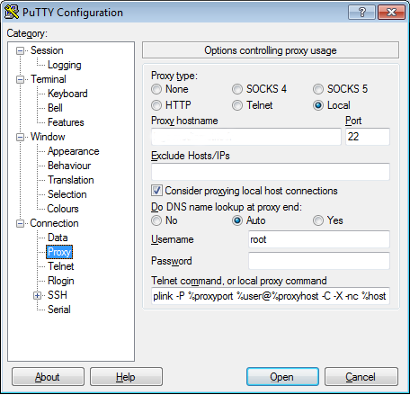

Bonjour,
J'avais sous la main une machine sous Ubuntu Xenial (16.04 LTS) où je voulais activer le chiffrage du homedir car je ne l'avais pas fait durant l'installation du système. Pourquoi ? Simplement par ce que j'installe des systèmes sur disque chiffré. Je pensais alors que c'était suffisant. La machine que j'ai voulu modifier est en fait une machine potentiellement partagée aujourd'hui, les besoins ont donc changés. Voyons tout de suite comment effectuer ces manipulations (après avoir fait une sauvegarde du homedir, il en va sans dire).
Pour l'installation des paquets :
apt install ecryptfs-utils libpam-mount
Pour l'encryption du homedir :
ecryptfs-migrate-home -u $MON_USER
Enfin, sans redémarrer la machine, il est recommandé de se connecter tout de suite à sa session pour vérifier le bon déroulé et y taper la commande suivante pour avoir le passe de récupération :
ecryptfs-migrate-home -u mon_user
L'opération de chiffrement étant validée, vous pourez supprimer le répertoire de sauvegarde réalisé dans le répertoire /home .
Source utilisée: ecryptfs sur ubuntu-fr
Bonjour tout le monde,
Vous l'aurez peut être tous remarqué, le site à changé de tête. En fait, Je n'utilise plus Wordpress comme moteur de blog bien qu'il est supporté mon site durant les 7 dernières années sur un serveur dédié. Évolution oblige, je suis passé sur lektor, un générateur de site static basé sur python, et au déploiement automatique. Les anciens articles publiés sont réimportés, le déploiement automatique est opérationnel, le thème est encore à revoir.
Il y aura donc encore des changements sur le site dans les prochains jours.
Bonjour,
J'utilise Linux la majeur partie de mon temps. Sur quelques machines, je suis en dual boot. Et par chez nous, nous changeons régulièrement d'heure pour suivre le soleil. Et avoir les deux systèmes qui mettent à jour la même horloge, et bien c'est la galère. Pour éviter les ennuies, je configure le BIOS de mes machines en UTC, et ce depuis des années. Je profite donc de ce billet pour donner les commandes windows à exécuter dans un terminal administrateur pour que Windows 10 calcule comme un grand son horloge local à partir d'une horloge BIOS en UTC.
Voici les différentes étapes :
Configuration de la base de regisre pour avoir l'heure bios en utc :
reg ADD HKLM\System\CurrentControlSet\Control\TimeZoneInformation /t REG_DWORD /v RealTimeIsUniversal /d 1
Synchroniser l'heure :
w32tm /config /update
Désactiver le service Windows Time service qui écrit l'heure à chaque arrêt du système sans regarder le registre :
sc config w32time start= disabled
Éventuellement, on peut installer un service ntp. Personnellement, mes sessions Windows ne sont plus assez longues depus bien longtemps pour avoir suffi des désagréments.
Bonjour,
Aujourd'hui, rien de passionnant, juste un petit mémo pour l'entrer dans une machine virtuelle pilotée par libvirt, mais surtout le raccourcis pour en ressortir.
Pour entrer :
virsh console VM
Pour sortir
Ctrl + ]
Bien sur, il faut que le système invité soit configuré pour avoir une console sur le port série.
Bonjour tout le monde.
Si vous êtes comme moi à installer un Windows de temps en temps , alors vous avez dû aussi remarquer qu'à un moment donné une boite de dialogue apparaît demandant de choisir son navigateur. Sur une machine d'administration qui ne démarre qu'une fois par an, installer un autre navigateur qui sera de toute façon obsolète au démarrage suivant n'est pas forcément judicieux. La problématique qui se pose alors est de désactiver cette fameuse boite de dialogue.
Pour de faire, il faut ajouter via un éditeur de base de registre, un Nouveau DWORD dans "HKEY_LOCAL_MACHINE\Software\BrowserChoice" du nom de "Enable". Sa valeur sera 0 pour le désactiver, 1 pour le réactiver.
Ensuite, la machine démarre plus vite 🙂
Bonjour,
Dans la petite famille des clones RedHat, CentOS est la distribution la plus connue. Pourtant, pendant un certain temps, après la sortie de la version 6 de Redhat, CentOS à été fortement critiqué pour ses releases tardives. A ce moment là, je suis aller tester d'autre distribution. Quelque mois plus tard, je me suis retrouvé avec une ClearOS et une RedHat en production, à coté de mes ScientificLinux.
C'est bien beau, tout le monde était en version 6.x, mais ça fesait 3 dépôts à géré, dont un qui n'a jamais reçu de mise à jour. Soit. Les distributions étant compatible entre elle, une migration devait être possible.
Pour ce faire, j'ai utilisé ce premier lien et ce second lien.
Voici pour info ce que j'ai tapé:
wget http://ftp.scientificlinux.org/linux/scientific/6.1/x86_64/os/Packages/{redhat-logos-60.0.14-2.sl6.4.noarch.rpm,redhat-lsb-4.0-3.el6.x86_64.rpm,redhat-lsb-graphics-4.0-3.el6.x86_64.rpm,redhat-lsb-printing-4.0-3.el6.x86_64.rpm,sl-indexhtml-6-2.sl6.5.noarch.rpm,sl-release-6.1-2.x86_64.rpm,sl-release-notes-6.1-1.noarch.rpm,yum-3.2.29-17.el6.noarch.rpm,yum-metadata-parser-1.1.2-16.el6.x86_64.rpm,yum-rhn-plugin-0.9.1-26.el6.noarch.rpm,yum-utils-1.1.30-6.el6.noarch.rpm}
rpm -e --nodeps $(rpm -qa clearos\* redhat\* centos\* yum\* | sort)
rpm -ivh *
yum clean all && yum reinstall $(rpm -qa --qf "%{NAME} %{VENDOR}\n" | egrep '(ClearFoundation|Red Hat, Inc.)' | cut -d\ -f1)
yum update
yum clean all && yum --releasever=6x update
Bonjour,
Pour ceux qui n'ont pas toujours le choix de leurs outils, il faut arriver à retrouver ses habitudes avec les outils fournis.
Dans mon cas, j'utilise Linux au quotidien, et au travail je suis souvent avec un poste sous Windows. Le système étant radicalement différent, les outils le sont aussi. Avec openssh, il est facile de modifier sont fichier ~/.ssh/config pour créer des connexions ssh avec rebond de manière transparente. Avec Putty, c'est un peu plus délicat, mais une fois que l'on a la méthode, ça roule.
La méthode, c'est de définir l'hôte intermédiaire dans la page proxy avec les informations qui vont bien. Pour "proxy command", un copie/colle de ce qui suit devrait suffir:
plink -P %proxyport -pw %pass %user@%proxyhost -C -X -nc %host:%port\n

Bonjour tout le monde,
Aujourd'hui, je vous propose de mettre en place un système de virtualisation utilisable sur tout type de matériel. En fait, dans notre cas du jour, il ne s'agit pas exactement de virtualisation mais plutôt de conteneur. L'avantage, c'est que ça fonctionne sur des machines qui n'ont pas forcément les instructions de virtualisation matériel. Pour ceux qui ne savent pas ce qu'est un conteneur (dans ce contexte), je vais faire un petit rappel.
Le conteneur permet de faire des machines virtuelles, mais celles ci n'auront pas un espace complet réservé comme sur d'autre système de virtualisation car pour le système hôte et les invités, il s'agit du même noyau. Cela implique donc différente chose, à commencer par des performance élevée car il y a moins d'étape entre l'application d'une machine virtuelle et le matériel (disque, mémoire, cpu, ...). En contre parti, comme on a qu'un seul noyau, les invités sont donc du même type que l'hôte (Linux -- Linux, Windows -- Windows).
Ici, nous ne verrons que la parti Linux. Le projet que nous allons utiliser s’appelle OpenVZ. Bien sûr, il y en a d'autre qui existe.
Nôtre système hôte sera un clone d'une RedHat 6 (Scientific Linux 6).
L'installation sur ce genre de système est vraiment très simple.
Récupérez en premier la définition du dépôt :
cd /etc/yum.repos.d && wget http://download.openvz.org/openvz.repo && \
rpm --import http://download.openvz.org/RPM-GPG-Key-OpenVZ
Ensuite, modifier le fichier openvz.repo pour désactiver le dépot redhat 5 et activer celui de la redhat 6.
Enfin, installez le kernel:
yum install vzkernel-firmware vzkernel vzctl vzquota
Pour que OpenVZ soit fonctionnel, il reste juste un peu de configuration. Désactiver SELinux (/etc/selinux/config) et mettez dans le fichier /etc/sysctl.conf ce qui suit:
# On Hardware Node we generally need
# packet forwarding enabled and proxy arp disabled
net.ipv4.ip_forward = 1
net.ipv6.conf.default.forwarding = 1
net.ipv6.conf.all.forwarding = 1
net.ipv4.conf.default.proxy_arp = 0
# Enables source route verification
net.ipv4.conf.all.rp_filter = 1
# Enables the magic-sysrq key
kernel.sysrq = 1
# We do not want all our interfaces to send redirects
net.ipv4.conf.default.send_redirects = 1
net.ipv4.conf.all.send_redirects = 0
Après un redémarrage sur le nouveau noyau, vous voilà prêt à créer et démarrer vos machines virtuelles.
Bonjour,Depuis quelque temps maintenant, la fondation mozilla publie une nouvelle version de firefox beaucoup plus fréquement, et par conséquant seamonkey aussi. Bien que cela permet d'apporter de nouvelles fonctionnalitées plus rapidement, ça pose d'autre problème notament au niveau des extentions.
Par exemple la google bare.
Pour que cette bare fonctionne toujours sur mon navigateur, je dézipe le fichier {6b6601f1-361e-4b9f-bb6d-f8305000e4f6}.xpi présent dans le répertoire extensions et modifie le champ "maxVersion" dans la section Seamonkey du fichier install.rdf. Ensuite, il suffit de refaire le zip et de relancer le navigateur et tout devrait être bon.
Pour toute extention, une simple recherche texte dans le fichier extensions.rdf vous permettra de retrouver le nom du fichier .xpi ou du répertoire contenant l'extention. La procédure ensuite reste la même.
J'ai dans un coin une petite machine de chez PC Engines, une WARP 1.D. Il y a quelques jours, j'y ai mis OpenWrt et un carte wifi N. Malheureusement, le débit wifi plafonnait à 65 Mb/s malgrès une lageur de bande de 40MHz.
En fait, la manipulation qui va bien est de se connecter en ssh et taper les commandes suivantes :
uci set wireless.radio0.noscan=1
uci commit
reboot
Depuis, mon wifi sur ce point d'accès est maintenant de 300Mb/s. Bon, j'ai encore beaucoup de chose à tester.